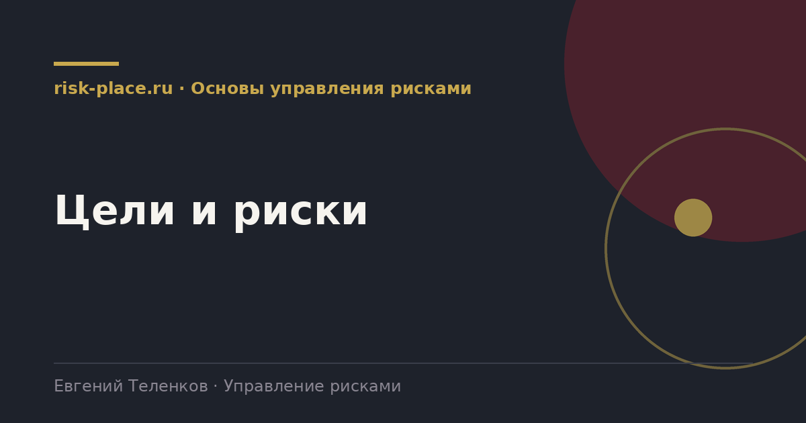

Главная · Библиотека · Основы управления рисками · Цели и риски
Библиотека · Основы управления рисками
Самая частая причина, по которой реестр рисков не читают, в том, что он не связан ни с одной целью компании.

Определение риска содержит слово «цели» не случайно. Влияние оценивается относительно чего-то, и этим чем-то является цель. Без нее невозможно ни определить существенность, ни объяснить руководителю, почему его должно это волновать.
Проверка простая. Возьмите любую строку реестра и спросите, достижению какой цели это мешает. Если ответ звучит как «ну, вообще это плохо для компании», строка не работает.
Пример для производственной компании с целью по выручке.
| Цель | Риск | Как влияет |
|---|---|---|
| Выручка 12 млрд рублей | Срыв пуска новой линии | Недополучение 900 млн выручки во втором полугодии |
| Себестоимость не выше плана | Рост цены ключевого сырья более 20 процентов | Превышение плановой себестоимости на 4 процента |
| Ноль тяжелых происшествий | Работы подрядчика на высоте без наряда | Травма, остановка участка, предписание надзора |
| Ввод объекта в срок | Задержка поставки импортного узла | Сдвиг пуска на квартал и штраф по контракту |
Обратите внимание, в правой колонке всегда есть число или срок. Это и делает риск обсуждаемым на уровне руководства.
Ситуация встречается чаще, чем принято признавать. Есть рабочие обходные пути.
Реестр, привязанный к целям, читается иначе. Вместо списка неприятностей руководитель видит перечень угроз тому, за что он отчитывается перед акционером. Это единственный способ получить его внимание надолго.
Есть и обратный эффект, менее очевидный. Когда риски разложены по целям, сразу видно перекос. Например, все двадцать рисков относятся к производству, а по коммерческим и регуляторным целям в реестре пусто. Это признак не отсутствия рисков, а отсутствия людей, которые о них говорят.
Частые вопросы
Одна форма для любого вопроса
Расскажем о ближайших датах, предложим формат под ваш состав участников и назовем порядок бюджета.
Предпочитаете почту — напишите на info@risk-place.ru. Адрес: Москва, улица Скаковая, 32с2.
 risk-
risk-